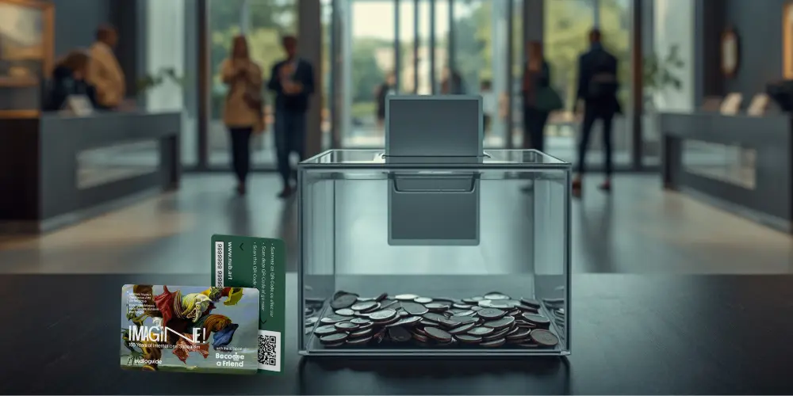

Nubart Team
How museums monetise a QR-code audio guide

There are several ways a museum can earn revenue from a digital audio guide — but to sell a QR-code audio guide directly, one thing is non-negotiable: access must be non-transferable. A public QR code can be shared endlessly, so it can't be sold. Nubart GUIDE uses a patented method, Lightweight Web Access Control (LWAC), that makes each card's QR code non-transferable yet reusable by its rightful owner — so the guide can be sold per visitor or folded into the admission price, like a ticket.
What are the options for charging for a smartphone audio guide?
Before choosing a provider, it helps to know the handful of business models museums actually use to charge for a smartphone audio guide — whether it runs in the browser or as an app. Each has trade-offs.
1 · Native app with in-app purchase. The museum publishes an app and visitors pay inside it. It can be feature-rich, but most visitors never download an app — take-up is typically around 2–3% — and an app means ongoing development, app-store approvals and updates.
2 · Access code printed on the ticket. A code on the admission ticket unlocks the guide. It ties access to a paid ticket, but visitors have to type the code, and a printed code can be photographed and reused unless it is single-use and tracked.
3 · Public QR plus a paid unlock code. A QR on a sign sends visitors to the guide, which then asks for a code bought at the desk. There's no app, but it stacks friction: a second queue, a code to type, typos, language barriers...
4 · Non-transferable QR cards. Each visitor receives a card whose QR works only for its holder — no code to type, no app. It behaves like a ticket: sellable, reusable by its owner, and the simplest thing to hand over at the desk. Using it is as easy as using any other "normal" QR code. This is the model Nubart GUIDE uses, via LWAC.
For selling the guide, the methods that lean on a public link leak revenue. The more access behaves like a ticket, the more reliably you can charge. The rest of this guide focuses on that model — but the take-up benchmarks further down are useful for estimating revenue whatever provider or method you choose.
Why you can't sell a guide behind a public QR code
Most QR audio guides are simply a link. A link can be screenshotted, forwarded and reused by anyone, anywhere — so there is nothing to sell. To charge for it, you need to control who has access.
Think of it this way: a public QR code behaves like a flyer — once someone has the link, it can be copied endlessly. A non-transferable QR card behaves like a ticket — it only works for the person holding it.
Some providers bolt on a crude workaround: after scanning the QR code, the visitor must type in a paid unlock code obtained at the ticket desk. It technically works, but it adds friction at exactly the wrong moment — a second queue, a code to type, typos, language barriers — and a poor first impression of the visit.
Nubart takes a different route: the card itself is the key. The visitor scans it and listens — no code to type, no app to install, nothing to register. The access is non-transferable, but the rightful owner can reuse it without limit.
How LWAC makes the guide non-transferable and sellable
Lightweight Web Access Control is Nubart's proprietary method for making a web link behave like a ticket: usable by its holder, worthless to anyone it's forwarded to. It runs as a Progressive Web App on the visitor's own phone — no download, no sign-up, no personal data required.
Patented in the EU, Spain and the USA — granted
Two business models for the guide
These are the two business models museums most often use to monetise a digital audio guide.
1 · Sell the cards separately
Offer the cards for sale at the desk or shop. Nubart supplies the cards at €1 each, after a one-time setup fee and a starter order; the museum sets its own selling price — commonly €2–3 — and keeps the margin. There's no subscription: reorder as you sell. If you'd rather not pre-purchase cards, separately sold guides can also run on a revenue-share basis, billed monthly.
Financially: you buy at €1 and sell at your own price, keeping the difference — typically a €1–2 margin per card.
2 · Include it with admission
Every paying visitor is offered a card, and its cost is recovered within the ticket price. This delivers the widest reach and the strongest engagement, and runs on a simple subscription with automatic card resupply.
Financially: the card's cost is built into the ticket price, so it's recovered on every admission rather than sold one by one.
What take-up can you expect?
The honest way to compare audio-guide formats is to separate them by who pays — because a free guide and a paid guide attract very different numbers.
| Free to the visitor | Share of all visitors who use the guide |
|---|---|
| Native museum appvisitors must find & download it | 2.47% |
| Nubart QR (signage)scanned from a sign or poster | ≈10% |
| Nubart card, includedhanded to the visitor to keep | ≈12% |
Of visitors offered a card with their ticket, about a quarter take one — and nearly 48% of those actively listen, giving roughly 12% reach across all visitors. A card you hold and carry is simply more likely to be used than an app most visitors never download — a pattern confirmed by our analysis showing only 2.47% of visitors download a museum's native app — or a sign you walk past once.
| Paid by the visitor | Share of all visitors who buy the guide |
|---|---|
| Traditional rented deviceBritish Museum / sector standard | ≈3% |
| Nubart QR card, sold separatelyaverage across venues | 5.61% |
A 2015 Museums and the Web study by British Museum staff found that around 3% of visitors take the permanent-collection guide, and that ~3% is the standard across the sector. Nubart's QR cards average 5.61% — nearly double that — and, unlike a rented device, 6.84% of card users return to the guide at least 12 hours after their visit, extending the museum's educational reach beyond the building.
How much should you charge for an audio-guide card?
You set the price — and the price shapes how many visitors buy. In our installations, take-up holds up well between €1 and €3, and from our experience it drops sharply at €5, where a card begins to feel expensive for an add-on. The calculator below estimates take-up for the price you choose, based on our installation data (which we refresh once a year), so you can see how price, take-up and revenue move together.
Worked example. A museum with 80,000 visitors a year, selling cards at €3, can expect roughly 11,000 cards sold and about €33,000 in gross revenue per year. The one-time setup and starter order (around €5,850) is typically recovered within the first few months, after which the guide contributes an ongoing yearly surplus.
Break-even calculator
For cards sold separately, in addition to admission. The estimated take-up changes with the selling price you enter — price is one of the factors that influences how many visitors buy, so the figures move as you adjust it.
Take-up is estimated from Nubart installations for the price you choose and refreshed once a year; real take-up also depends on your audience and setting. The one-time investment covers the setup fee and your starter card order.
For publicly funded and free-admission museums
Monetising the guide isn't only about profit — it's about sustainability and fairness. A small, optional card lets the people who actually use the guide help pay for it, instead of the whole cost falling on taxpayers who may never walk through the door. Done well, it keeps the guide free at the point of your mission while making it self-sustaining.
Revenue is only part of the value
- Visitor analytics — languages, dwell time and behaviour patterns, GDPR-friendly and with no personal registration. See why a web-based guide gives museums better visitor data than apps or devices.
- Donations — the guide can prompt for support at the right moment.
- A keepsake that keeps working — the card is a souvenir, and returning use extends the educational relationship long after the visit. Some museums even sell the audio tour as a postcard in the museum shop.
How Nubart supports both models
Selling cards separately is pay-as-you-go: a one-time setup fee, a starter order of cards, then reorder as you sell — or, if you prefer, we can consider a revenue-share billed monthly with no pre-purchase. The included model runs on a subscription with automatic resupply (no reordering). Nubart GUIDE is used by around 200 institutions across five continents — from national libraries and city museums to castles, wineries, caves and science centres.
See it for your museum — request a quote, or order a free sample card to try the experience yourself.
Source for the rented-device figure: Mannion, Sabiescu & Robinson, "An audio state of mind," Museums and the Web 2015. App take-up and Nubart figures: Nubart internal analysis; take-up figures are deliberately conservative.
We hope you found this article useful. Subscribe to our newsletter so you don't miss any of our posts.
You may also be interested in

QR code audio guides for museums: what to get right before signing a contract
CMS, business models, third-party tracking and visitor data: the non-obvious decisions to settle before commissioning a QR code audio guide.
Turn your audio tour into postcards for the museum shop
A non-transferable QR card doubles as a souvenir. How museums sell the audio guide as a postcard visitors take home.